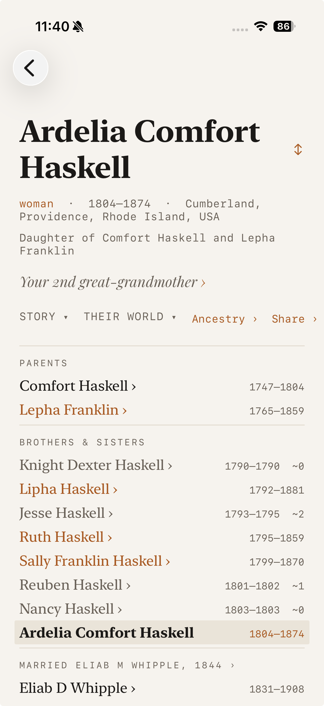

The hub of the whole app — every list, card, and pin eventually lands here. One page holds who they were, how they connect to you, what the world was doing around them, and exactly how the record knows it.
How you get here: from anywhere — a digest card, a query result, the family group sheet, a Nearby listing, a search hit, or another person’s register.

1 2 3 4 5Further down the page: Lived through — the handful of historical events that best frame this life; tapping one opens that event’s results with this person pinned at the top — and How the record knows: the citations, grouped by source, that name this person, with the facts each source supports, page references, and excerpts where the record has them.
When the National Archives has candidate records for this person — a draft card, a naturalization — they appear here awaiting your judgment, the same records counted on Explore’s “In the National Archives” card.